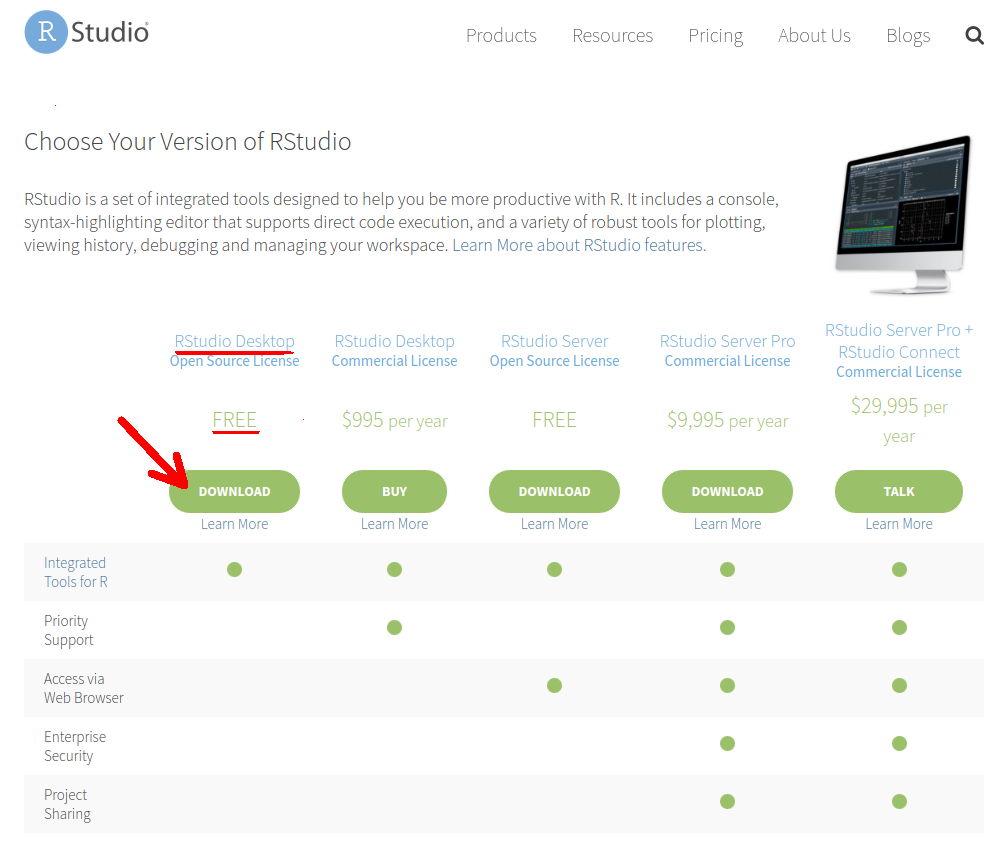
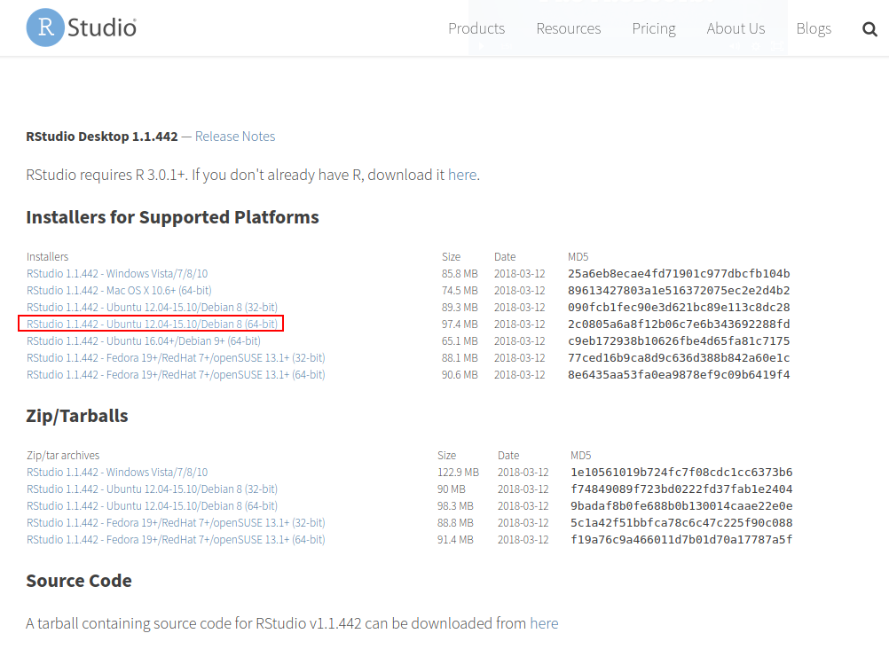

2.3 Rstudio no Ubuntu
O RStudio é um ambiente integrado de desenvolvimento (IDE) construído especificamente para o R. Assim como o R, o RStudio pode ser baixado gratuitamente e é multiplataforma.
Para instalação da versão do RStudio para Desktop, você precisa saber se seu sistema operacional é 64 ou 32-bit e a versão do Linux Ubuntu. Essas informações podem ser obtidas, respectivamente, pelos comandos:
$ archx86_64$ lsb_release --release | cut -f214.04Se retornar x86_64 sua máquina é 64-bit.
Com essa informação e versão do sistema operacional, siga os seguintes passos:
- acesse RStudio
- clique em Download RStudio
- Procure a opção RStudio Desktop (FREE) e clique download

- Selecione sua plataforma

clique sobre o link da sua plataforma, p.ex.: RStudio x.xx.xxx - Ubuntu 12.04-15.10/Debian 8 (64-bit)
- Dependendo da sua versão Ubuntu, ao clicar sobre o sobre o arquivo baixado com o botão direito, há a opção de abrir com Ubuntu Software Center e então clicar em
instalar. Se na versão de seu Desktop não há esta opção ao clicar com botão direito sobre o arquivo, instale via terminal5 com os seguintes comandos:
$ cd /local/do/arquivo/baixado
$ sudo dpkg -i arquivoBaixado.deb
$ sudo apt-get install -fAbra o RStudio digitando no terminal:
$ rstudio &Agora você está pronto para começar a programar em R aproveitando as facilidades que o RStudio oferece.
digite ‘Ctrl+Alt+t’ para abrir um terminal no Linux Ubuntu↩